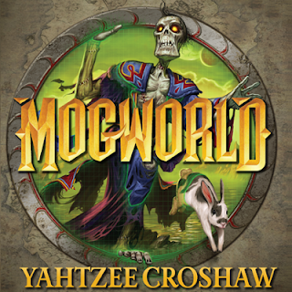
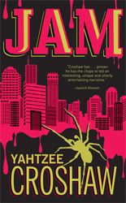
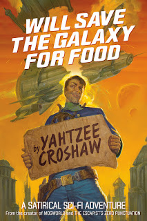
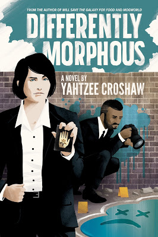

Benjamin 'Yahtzee' Croshaw

Born in the town of Rugby in Warwickshire, England on 24th May 1983, Benjamin 'Yahtzee' Croshaw is best known for his hit web-series 'Zero Punctuation' for the Escapist, as well as his solo-made video games including the Lovecraftian-influenced Chzo Mythos series.
For most of his life, he longed to become a published novellist, which he achieved in 2008 with his popular debut novel, Mogworld. In the years since Mogworld was first published Yahtzee has followed on with three separate novels; Jam, Will Save The Galaxy for Food and Differently Morphous.
Yahtzee has stated this his biggest literary influences include H.P. Lovecraft, Terry Pratchett and Douglas Adams. This gives him a uniquely dark, macabre but also highly comedic style in his writing.
Mogworld

Imagine slogging through life as the son of a peasant pig farmer, working your way into one of the land's least respected Mage academies and then finally falling into the serene, peaceful and loving embrace of death in defence of it.....only for some burke to bring you back to life again.
Mogworld tells the story of Jim, a poorly educated Mage whose mortal status has been made aggravatingly ambiguous by dark forces. As Jim endlessly tries to correct this ambiguity and return to the paradise of the afterlife he had so briefly been able to enjoy, fate puts him on a path to discover just what forces are behind his newfound immortality and meddling with the world he once knew.
Jam

The city of Brisbane has seen it's fair share of floods over the years, although they have mostly been rather dull as they only involved water instead of man-eating jam.
The novel follows a group of housemates as they attempt to navigate their way through post-jam Brisbane to find a way out of the city. On their way they encounter everything from not-so secret government agents, ironic cultists and not to mention, the seemingly sentient man-eating jam that has flooded the city.
Will Save The Galaxy For Food

The life of a daring star pilot is filled with endless adventure and peril.....until some smart-arse git goes and invents quantum teleportation
In a universe where space travel has been rendered obsolute with instant quantum tunneling transportation, once heroic star pilots are forced to do whatever it takes to survive, whether it is acting as renegade pirates or taking dullard tourists on sight-seeing tours.
Will Save The Galaxy For Food follows the mishap of one such redundant former star pilot who in trying to make a quick buck, ends up angering a psychotic cassowary talon wielding mobster, which is of course one of the worse mobsters to aggravate. As he tries his best to save his skin, it soon becomes evident that his star pilot skills maybe more necessary than he expected.
Differently Morphous

When the secrets of magic and other-worldly creatures are accidentally exposed to the public in today's social media filled world, the Ministry of Occultism must learn to adjust to the public relations and public scrutiny of the modern age.
As a serial killer appears to be targeting the gelatinous creatures that have been welcomed into society, it is up to a group of agents from the Ministry of Occultism to track down this killer before they get buried under an avalanche of negative Twitter hashtags and bashing from the government.